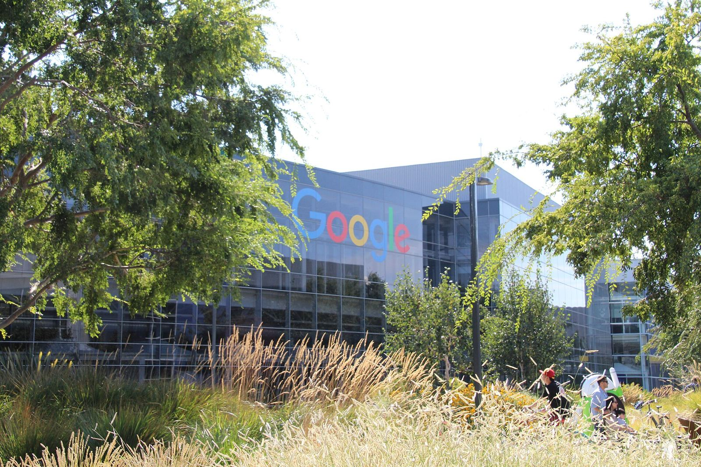

谷歌 10 月 9 日起把 Gemini 免费用户限制在 Flash Lite，4.99 美元的 AI Plus 也将失去 Pro


The Verge 2026 年 10 月 6 日报道，从 10 月 9 日起，Google Gemini 的免费用户将只能使用 Flash Lite 模型。目前免费用户可以在 Flash Lite、Flash 和 Pro 之间选择；改动之后，想用标准版 Flash 需要订阅每月 4.99 美元的 Google AI Plus。
「改动之后，想用标准版 Flash 需要订阅每月 4.99 美元的 Google AI Plus。」
AI Plus 本身也要降级：它很快将不再包含 Gemini Pro。谷歌表示，AI Plus 订阅者会收到邮件，告知何时失去 Pro 的使用权限。调整完成后，顶级的 Gemini Pro 模型和「Deep Think」高级推理选项只向 Google AI Pro 和 Ultra 订阅者开放，月费分别为 19.99 美元和 99.99 美元。
谷歌说，用户仍可为每个模型选择低、中、高三档思考强度，但高档位可能更快耗尽 Gemini 的使用额度。本稿只转述已核对的公开报道。
来源
摘记，不是官方媒体。事实以所链出的原始报道为准。